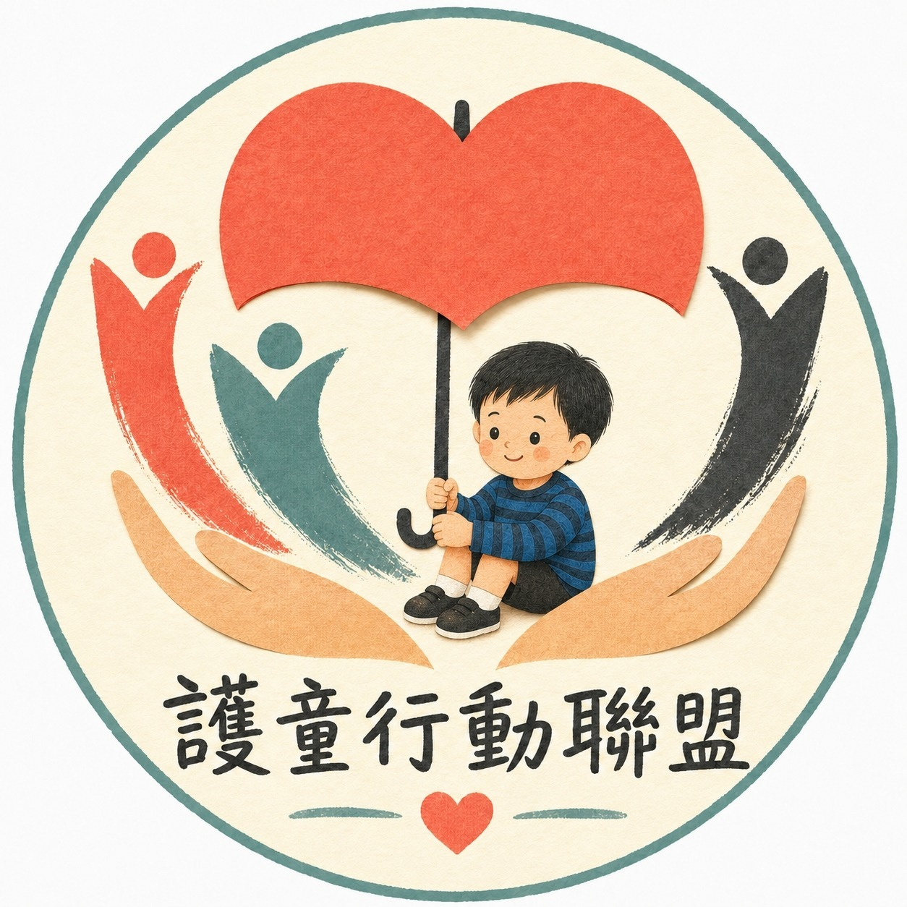
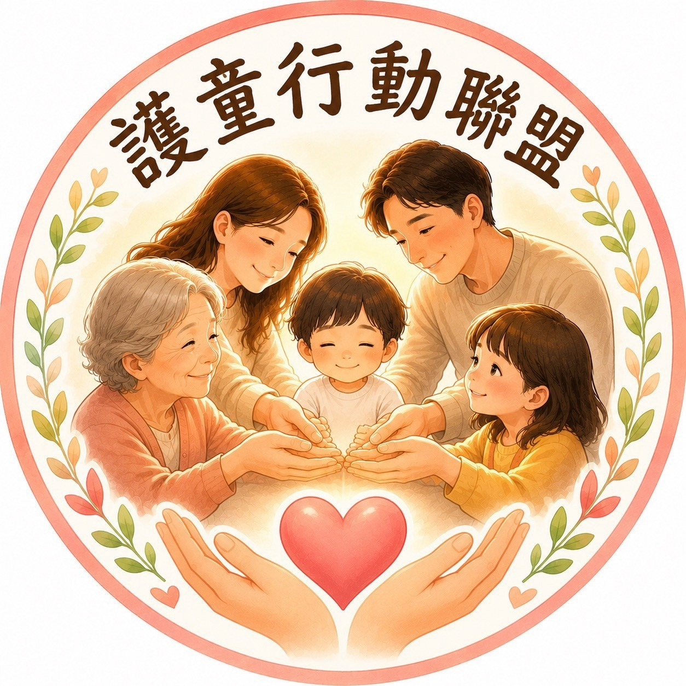
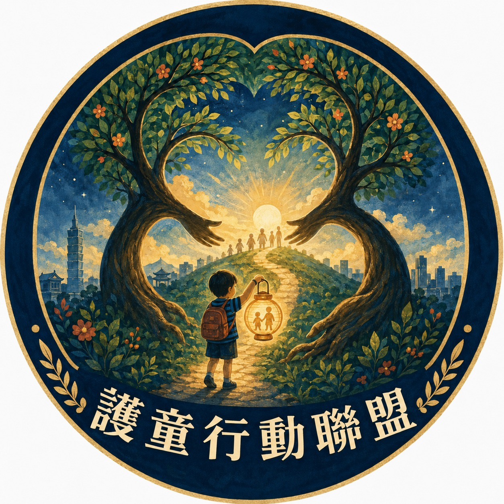
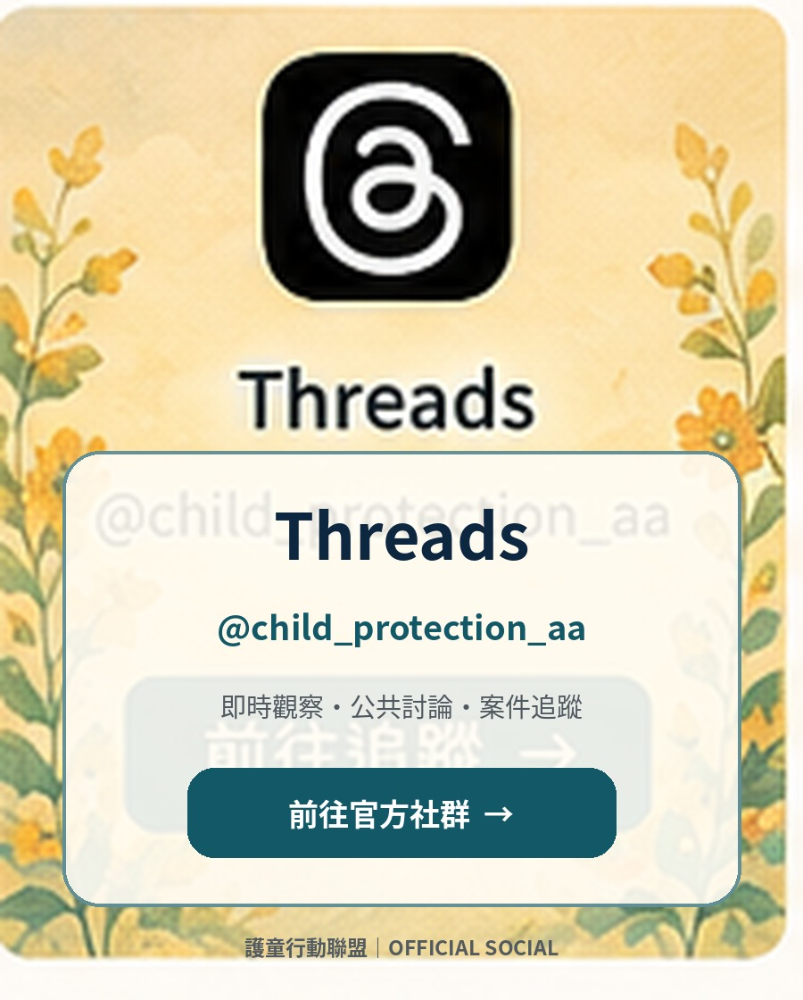

Every child deserves to be seen heard, and protected.
We follow the evidence from the courtroom to the public record—preserving stories that must not disappear and turning remembrance into action for stronger child-protection systems.
Organize court information, case reports, activity records, judgment progress and institutional initiatives into a banner menu, and quickly enter the page like selecting a video.
Chen Shangjie’s negligent-homicide case is in the second instance. The Judicial Yuan lists an appeal preparatory proceeding on September 16 at 2:30 p.m., Taiwan High Court Case No. 115年度上訴字第4688號, in Special Courtroom (專一法庭), Division 卯.
Let every reflection become part of protecting children
From the first time we heard Kaikai’s name to following the case, the court proceedings, and child-protection debates, many of us have carried words left unsaid. We invite you to record the image that saddened you, the question you still cannot resolve, or the change you hope to see.
Can we make sure the next child never has to endure the same tragedy?
Your contribution does not need to be long or complete. A few sentences, a short story, or one concrete proposal can help society hear another voice for children.
Next key dateSep 16 (Wed), 14:30 · Taiwan High Court, Special Courtroom (專一法庭), Division 卯 · Case No. 115年度上訴字第4688號
Speaking Up Ahead of the September 16 Appeal Preparatory Proceeding
With less than a month before the September 16 second-instance preparatory proceeding in the case involving former social worker Chen Shang-jie, alliance members brought the outreach campaign to Taipei Main Station on August 20—keeping the case, institutional accountability, and every child’s right to protection in public view.
Members moved from East Gate 1 and North Gate 2 through the station plaza and into the main concourse, holding advocacy signs and sharing case and alliance leaflets. A leaflet read for a few minutes or a sign seen for a few seconds can still become part of the public memory that keeps tragedy from being erased by time.
They should have had the chance to grow up. May the tragedy end here; may every child be protected.
01Keep the case visible02Clarify every link of responsibility03Protect public trust04Reach children before tragedy
On-site messagesDo not donate to the Child Welfare League FoundationReckless disregard for life—CWLF must step downMay the tragedy end hereTaiwan is not a country where losing even one child is treated as inconsequential
These are advocacy messages recorded at the event. The appeal remains pending; individual criminal responsibility and legal conclusions are for the court to determine from the evidence and under due process.
On August 1, victims’ families and ordinary parents gathered on Ketagalan Boulevard to speak out against drug-impaired driving and drunk driving, while calling attention to child protection. This was not a contest between political camps; it was a public appeal by people who had lost loved ones and were still seeking fairness and justice.
What deserves to be seen is not the crowd size or political position, but every person who still chooses to stand up and leave a voice for their family and for children.
An event’s value should not be defined only by attendance. Accompanying one another, sharing understanding, and making victims’ families and harmed children visible are themselves a source of strength.
From case warning to system changeLet every tiny warning signal be seen, and let protection arrive before harm occurs.
SOCIAL CASES · CASE TRACKING
Cases of Public Concern Area
Use a banner-style case menu to organize major case backgrounds, judicial progress and system tracking; quickly enter the case page just like selecting a video.
Records preserve the case; memory must move institutions toward change.Browse by region: Taiwan · Mainland China · Japan
WHY WE KEEP GOING
Don’t forget to eat | Why we continue to act
Some names should not only exist in the news.
Every time I listen, every time I record, every time I take to the streets, I hope that the harm the children have suffered will not be forgotten by time.
We continue to pay attention to children's cases, supervision systems, and record judicial proceedings, not to stay in sorrow, but to hope that the next child can be seen in time and well protected.
Court attendancecase trackingstreet initiativevictim support
Let the neglected harm be seen and let the system really catch the children.
Updated through August 20, 2026. Every number reflects volunteers showing up, documenting proceedings, speaking out, and standing beside affected families.
⚖
21events
Court attendance and case support
Continuously record judicial proceedings and important court hearings, accompanying the case through the long trial.
📣
21events
Street advocacy, protest and care
Bringing child safety, victim support, and institutional accountability into public spaces.
♥
4initiatives
Charity fundraising and caring activities
Let the attention not only stay in words, but also turn into concrete companionship and support.
RECENT ACTIVITY · SYNCED
Latest actions added
New in-person and online initiatives are mirrored here from Activity Records.
Record the case trial progress, important court hearings and judicial procedures.
⌕
case tracking
Compile public court dates, judgments and verifiable information.
✦
public initiative
Organize scattered information into easy-to-understand context and promote the implementation of the child protection system.
♡
victim support
Respect the voices of the family members and let the efforts on the long judicial journey be seen.
VOLUNTEER LOGO SERIES
Volunteer LOGO
The four volunteer identities continue the common visual vocabulary of "Guardian, Family, Light and Forward" and can be used flexibly according to different activities and initiative situations.

01｜Umbrella protectionArtistic image: The umbrella symbolizes shelter from the wind and rain and immediate protection. The child sits in the guardianship, which means that when risks arise, someone is willing to hold up a safe space for the child.

02｜Family GuardianArtistic image: Family members extend their hands together, symbolizing that the child's safety does not come from a single role, but from the power of stable companionship, support network and being caught.

03｜Light up and move forwardArtistic image: The child holds a lamp and walks towards the light ahead, symbolizing continuous recording, inquiry and advocacy; even if the journey is long, a lamp is used to illuminate the place where the system needs to be seen.04｜Guardian of lightsArtistic image: The lights in the children's hands represent undying concern and hope. The tree and hands form a stable shelter, conveying companionship, warmth, and the core spirit of "not letting children be forgotten."
The above is an artistic image description, used for visual interpretation of the brand and initiative, and does not represent the determination of laws, policies or facts of individual cases.
OFFICIAL SOCIAL
official community
Facebook, Instagram, and Threads have been organized into independent official community pages, which can be followed from the art cards of each platform.
 ⚖ Court is about to begin
⚖ Court is about to begin


official community
Facebook, Instagram, and Threads have been organized into independent official community pages, which can be followed from the art cards of each platform.

Threads Facebook